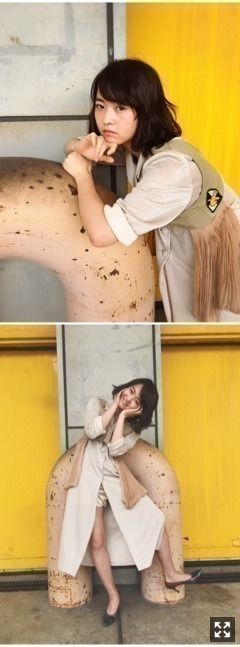
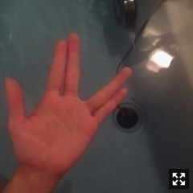

HELMAPH&RODITUSのリメイクベスト
と、痛くないパンプス、
名古屋握手会ありがとうございました。
全握ペアは伊織ちゃんでした！
インフルとアナゴfull2曲で
結構ヘトヘトになる、、体力、、
らじらー！で放送されましたが、
3rdアルバム収録曲に
「ごめんね、スムージー」という
井上、中元、万理華のユニット曲があります。
ラブリーな感じです。
どうせならフリッフリの衣装着たいよね
MVあったらどんな感じなんだろ〜〜
ライブで披露するの楽しみ｡ﾟ(ﾉ∀｀)ﾟ｡
望日香に会いたい！
ひめたん家の犬ね。
最近の癒しです。

よく開く手
なんか最近クセで握手中も無意識にやってた。
ブタの手ならぬまりかっとポーズです。
これできない人意外と多いみたい。
できる？
最近息抜きに遠出した！
散歩して露天風呂に入った！
あとは自分が男だったらこの服着たいなあ！
っていう服を勝手に兄にプレゼントしたり
してます。
また買い物に出かける予定！
私服のリクエストが多いので
今日はたくさん載せます〜〜
サテンのガウンにブルーのメッシュ
jennyfax 笹と犬の刺繍が入ったボトム
skydiving magazineのカバン
DANGEROUS
まりか